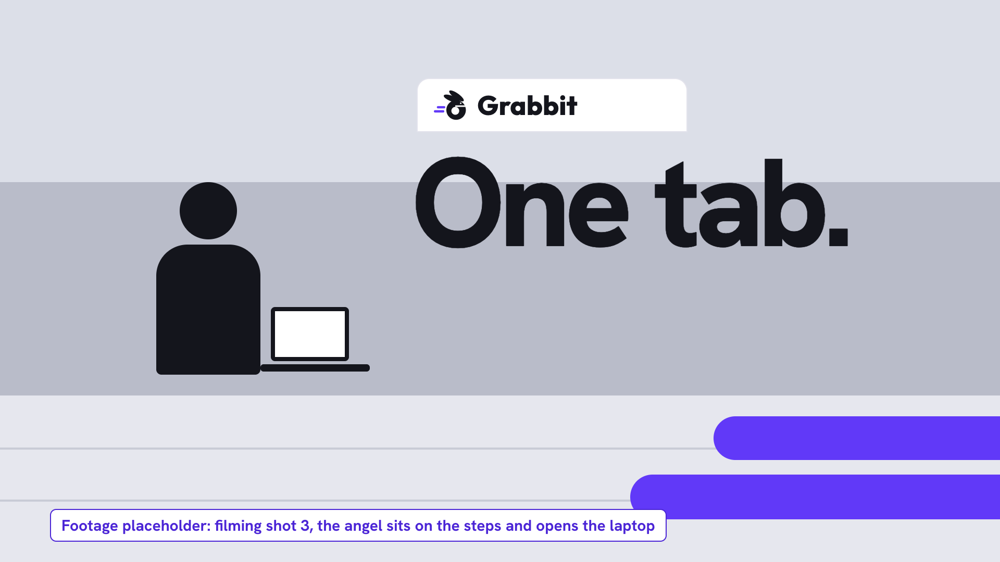
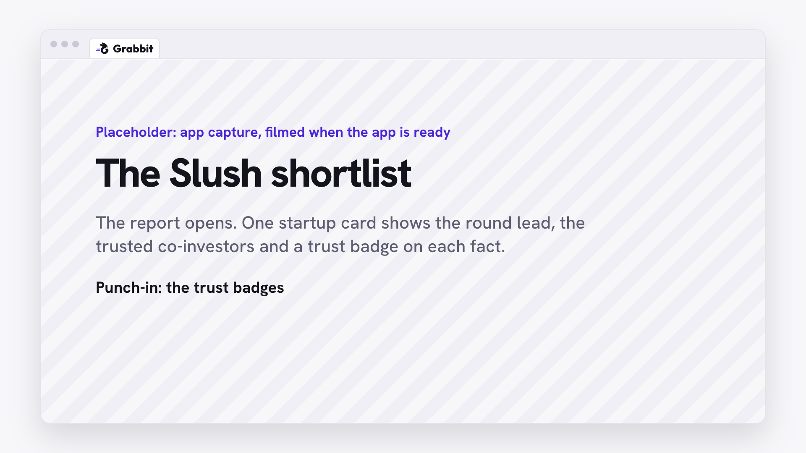
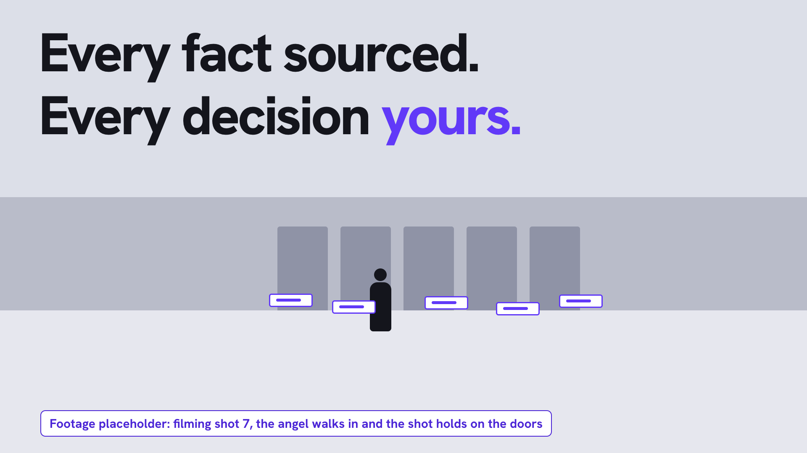

Voice: Next week, Slush opens this door to two thousand nine hundred eighty-nine attendees. Today, it is only you.
Reads: the empty entrance and one person (0-1.5s); the counter lands on 2,989 while name tags fill the forecourt (1.5-8s)
Sound: wind and near silence; soft ticks while the counter runs; pop on 2,989

Voice: One calendar. No analyst. So you open tabs, you read old databases, and you get tired before you decide anything.
Reads: windows pile up over the doors (0-5s); "47 tabs. 0 decisions." lands (5-8s)
Sound: one whoosh for each new window, three takes in rotation; still no music

Voice: Close them.
Reads: the angel sits and opens the laptop, the speed lines sweep the tabs away (0-2s); "One tab." lands (2-5s)
Sound: whoosh on the sweep; the music starts here

Voice: none
Reads: the camera goes into the laptop screen until the app fills the frame (0-3s)
Sound: music builds; no effects

Voice: Tell Grabbit what you want. A vague thesis is enough. Name two investors you trust.
Reads: the typed thesis (2-8s); the two reference investors (9-16s)
Sound: music steady; soft key ticks while the angel types

Voice: Grabbit does not only answer. It asks, and each question has real numbers from Cala's graph.
Reads: the question from the agent (1-8s); the numbers in it, after the punch-in (8-14s)
Sound: music steady; pop when the question arrives

Voice: Here is your Slush shortlist. Who led each round. Which of your trusted investors joined. Each fact shows its source.
Reads: the report opens (0-3s); one startup: lead, co-investors, trust badges (3-10s)
Sound: music lifts as the report opens

Voice: Too long? Say so. The agent rewrites its own instructions, and the report changes in front of you.
Reads: "shorter, co-investors first" (0-3s); the change marks on the report (3-8s); one source opens (8-10s)
Sound: key ticks on the correction; riser into the report change, the one impact of the film

Voice: Now go.
Reads: the camera comes out of the screen: the laptop stays open, the angel has a coffee (0-2s); "You: coffee." (2-4.5s); "Grabbit: on watch.", only the shortlist tags stay (4.5-8s)
Sound: music drops low; wind returns

Voice: Grabbit keeps watching. A startup on your shortlist announces a seed round, led by an investor you trust. You know why it matters before the others read the news.
Reads: the angel returns to the laptop (0-2s); the notification with its Simulated event label (2-7s); why it matters, in the chat (7-14s)
Sound: pop on the notification; click when the angel opens it; music returns

Voice: Grabbit does not tell you what to buy. It gives you your time back, so you spend it on the decision.
Reads: the angel walks to the doors, the shortlist tags wait there (0-4s); "Every fact sourced." (1-5.5s); "Every decision yours." (5.5-12s)
Sound: music full; footsteps from the footage

Voice: Grabbit. Built on Cala.
Reads: the speed lines wipe the doors away and carry the mark in (0-1.5s); "Built on Cala" and the demo link hold (1.5-6s)
Sound: whoosh on the speed lines; music ends on a bar line under the card